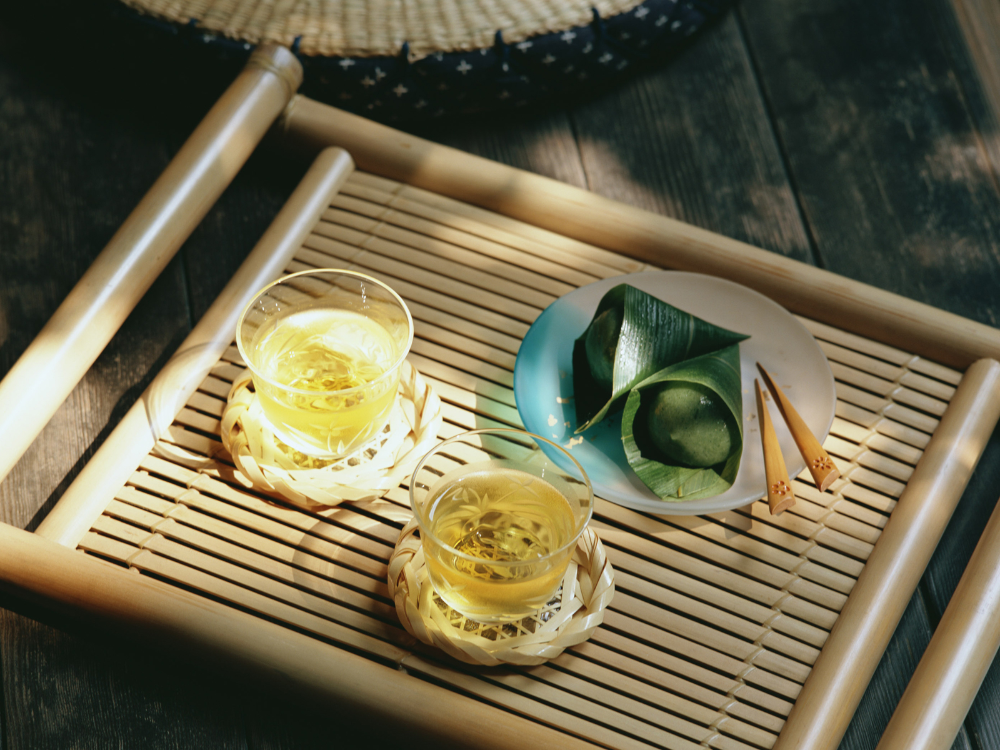
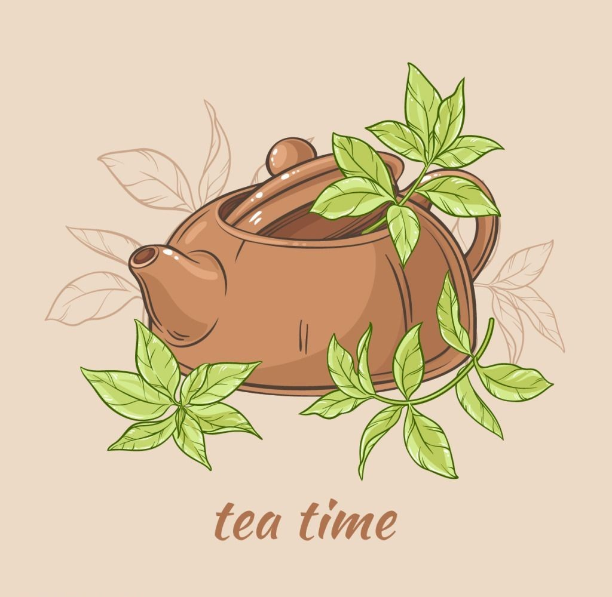
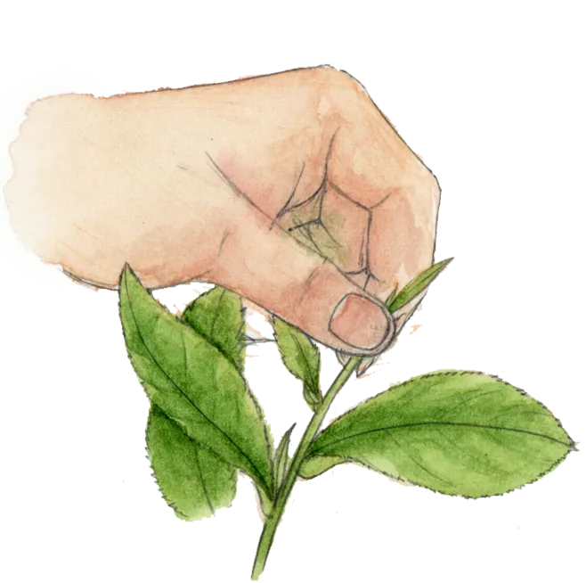

West lake Longjing


Classification
Growing Region West Lake Longjing tea is famous for four fabulous features,
which are " green color, fragrant smell, sweet taste and beautiful shape".
The premium spring West Lake Longjing has spiky seedlings,
longer buds than leaves and no fluff on the body surface.
When spoiled, the color of the tea is bright and the smell is fresh.
With the decline of the levels of Longjing tea, the color turns to darker,
the size turns to bigger, the surface turns to rougher, the taste turns to richer,
the leaf bottom turns from bud to leaf.
West Lake Longjing tea is famous for four fabulous features,
which are " green color, fragrant smell, sweet taste and beautiful shape".
The premium spring West Lake Longjing has spiky seedlings,
longer buds than leaves and no fluff on the body surface.
When spoiled, the color of the tea is bright and the smell is fresh.
With the decline of the levels of Longjing tea, the color turns to darker,
the size turns to bigger, the surface turns to rougher, the taste turns to richer,
the leaf bottom turns from bud to leaf. The West Lake Longjing is native to the mountains in Zhejiang Hangzhou West Lake,
where has a mild climate, abundant rainfall and full light.
The soil here is fertile and slightly acidic with good drainage,
luxuriant forests and streams. The annual average temperature is 16 ℃
and the annual precipitation is about 1500 mm. The superior natural conditions
in favour of the growth of the tea trees and the germination of the buds.
The picking time is around 30 batches of all year, which is the most in all types of tea.
The West Lake Longjing is native to the mountains in Zhejiang Hangzhou West Lake,
where has a mild climate, abundant rainfall and full light.
The soil here is fertile and slightly acidic with good drainage,
luxuriant forests and streams. The annual average temperature is 16 ℃
and the annual precipitation is about 1500 mm. The superior natural conditions
in favour of the growth of the tea trees and the germination of the buds.
The picking time is around 30 batches of all year, which is the most in all types of tea.